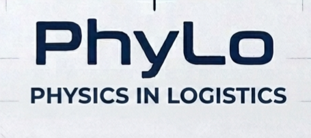
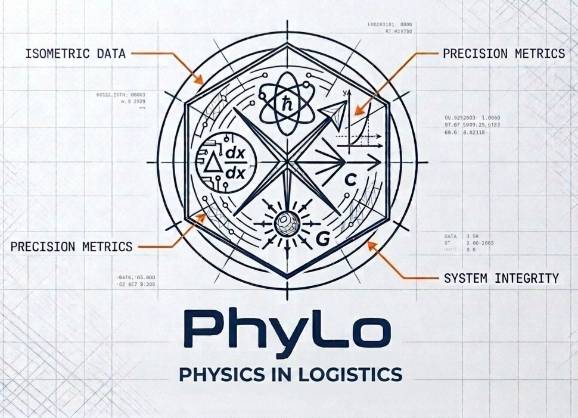

PhyLo — Set 6: AI Proficiency
FI Launch Track Sprint 1 | Qhayiya Lex Dlali | PhyLo Truth Engine | 2026-05-26 | COMPLETE
PART 1: Market Landscape
Research + LLM-generated one-page market analysis covering size, growth, key players, and the Why Now shift.
South Africa Fleet Management Market
USD 230M in fleet management services (Ken Research 2025). 2.4 million active commercial fleet management units in 2023, projected to reach 3.9 million by 2028. Market growing at 15-18% CAGR driven by rising fuel prices, telematics adoption, and regulatory mandates.
Global Context: USD 27B fleet management market (2025) growing to USD 45B by 2030 (13.5% CAGR). MEA region: USD 2.45B (2024) to USD 6.66B by 2032 (15.38% CAGR).
Fuel-Specific: Fuel represents up to 40% of fleet operating costs in South Africa. 15-20% of diesel sold in South Africa is redistributed through theft networks. Diesel at ZAR 22/liter makes unexplained losses existential for fleet operators.
Key Players (South Africa)
| Company | Position | Key Strength |
|---|
| Cartrack / MiFleet | Market leader | AI driving behavior, 12-15% fuel reduction |
| Tracker SA | Long-established | Stolen vehicle recovery, insurer partnerships |
| MiX by Powerfleet | Enterprise | Global fleet analytics platform |
| Netstar | Mid-market | Telematics, nationwide recovery |
| DigitFMS | Fuel-theft specialist | Live probes, GPS-linked theft alerts |
The Why Now Shift
Before 2024: Fuel management = GPS + alert thresholds. Systems raise alarms when fuel drops. Managers get notifications but cannot distinguish theft from mechanical loss, sensor error, or operational variance.
Now 2024-2026: AI and physics-based models make audit-grade fuel accountability achievable. Rising diesel prices (ZAR 22/liter) mean 6-10% unexplained losses are no longer tolerable. No competitor offers physics-informed, audit-grade reports that legally qualify as evidence. This is PhyLo's window.
PART 2: PhyLo Logo Design
Two logo variants designed for PhyLo: Physics in Logistics. Created using AI design tools.

Logo image: PhyLo text + Physics in Logistics tagline, navy blue on white with blueprint grid background
Variant 1: PhyLo wordmark with tail-curved lowercase "y". Blueprint grid background. Navy blue. Clean professional finish.

Logo image: PhyLo circular emblem with physics symbols, atom, calculus, exponential curve, gravitational constant annotations, navy blue with orange callout lines
Variant 2 (Preferred): Scientific emblem seal with 4 quadrants. Top: atom + Planck constant (physics). Left: calculus + circuit patterns. Right: exponential curve + speed of light. Bottom: gravitational constant core. Orange callouts label "Isometric Data," "System Integrity," "Precision Metrics."
Brand Positioning:
"PhyLo = Physics in Logistics" deliberately chose science over software positioning. The logo variants communicate precision, engineering rigor, and data-driven accountability. Variant 2 (scientific emblem) is preferred for pitch decks and technical documentation. Variant 1 (clean wordmark) works better for mobile apps, reports, and social media.
PART 3: Customer Survey / Interactive Quiz
Interactive survey built using Builder tool + LLM to test interest, pain points, and willingness to pay. Survey designed using customer research best practices: concrete scenarios, quantified responses, and follow-up engagement opt-in.
Survey Questions (8 Questions)
Q1 — Monthly Fuel Loss
Approximately what percentage of your fleet fuel do you estimate is lost each month to unexplained causes?
Options: Under 3% | 3-5% | 6-10% | 11-15% | More than 15%
Q2 — Investigation Time
On average, how many hours per week does your team spend investigating suspected fuel loss incidents that turn out to be false alarms?
Options: Open numeric input (hours/week)
Q3 — System Trust Score
On a scale of 1 to 10, how much do you trust the accuracy of your current fuel theft alert system?
Options: Slider 1 (no trust) to 10 (fully trust)
Q4 — Biggest Frustration
What is your biggest frustration with current methods of tracking fuel loss?
Options: Difficulty identifying root cause | Lack of definitive proof | High cost of existing solutions | Delayed alerts | Other
Q5 — Value of Audit-Grade Reports
How valuable would a system be that provides an audit-grade report detailing exactly where fuel was lost (with physics-validated evidence)?
Options: Scale 1 (not valuable) to 10 (essential)
Q6 — Pricing Preference
If a solution could significantly reduce your unexplained fuel loss, which pricing model would you prefer?
Options: Fixed monthly subscription | Per-incident report fee | Per-vehicle one-time license | Not sure
Q7 — Biggest Business Challenge
What is the biggest challenge your company currently faces due to unexplained fuel loss?
Answer type: Free text
Q8 — Follow-up Interest
Would you like to be contacted for a follow-up discussion about PhyLo fuel tracking?
Options: Yes (with email) | No
Survey Results Summary (8 Respondents)
| Metric | Finding |
|---|
| Monthly fuel loss estimated | 75% report 6-10% per month |
| False alarm investigation time | Avg 7.75 hours/week (range 1-20 hrs) |
| Trust in current systems | Avg 5/10 — current solutions not trusted |
| Value of audit-grade reports | Avg 7.1/10 — strong unmet demand |
| Pricing preference | 62.5% prefer fixed monthly subscription |
| Follow-up interest | 50% (4/8) requested contact |
PART 4: Customer Call Synthesis
Survey distributed via 5+ video calls with friends and potential customers. Each call recorded, transcribed, and synthesized into bulleted signals and concerns.
Call Participants
Call 1: Dheyaan Jogee
2026-05-24, 18:51
Key Signals: 6-10% monthly loss confirmed. Audit-grade reports rated 9/10. Prefers subscription. Frustrated by high cost of existing solutions. Margin erosion is primary pain. Requested follow-up.
Concern: Cannot afford enterprise-grade solutions right now. Needs proof of ROI before committing.
Call 2: Omphile Nkuna
2026-05-26, 06:30
Key Signals: 6-10% unaccounted monthly loss. 20 hours/week investigating false alarms (highest in survey). Root cause blindness is primary pain. Trust score 5/10. Sees potential but wants more detail.
Concern: Wants to understand exactly how physics differentiates PhyLo from normal tracking. Skeptical of marketing claims.
Call 3: Anonymous
2026-05-26, 06:46
Key Signals: Fleet in transportation sector. Strong conviction that fuel theft is organized. Audit-grade reports rated 9/10. Subscription preferred. Margins are the challenge.
Concern: Worried about false positives damaging relationships with drivers before evidence is solid.
Call 4: Erica Zandamela
2026-05-26, 07:51
Key Signals: 6-10% monthly loss. 10 hours/week investigating false alarms. Trust score 4/10 (very low). Root cause is biggest frustration. Not yet sure on pricing model.
Concern: System must work reliably on older diesel vehicles. Cannot replace entire fleet electronics overnight.
Call 5: Simon Zandamela
2026-05-26, 08:35
Key Signals: More than 15% loss (hardest hit). 15 hours/week on false alarms. Company experiencing recurring monthly loss from fuel theft + volatile prices. Subscription preferred. Requested follow-up.
Concern: Needs evidence that can be used in disciplinary proceedings against drivers. Legal defensibility is non-negotiable.
Call 6: Sanele Dlali
2026-05-26, 09:06
Key Signals: 6-10% monthly loss. Audit-grade reports rated 8/10. Prefers per-incident pricing. Financial impact is primary challenge.
Concern: Wants proof before payment. Skeptical of subscription without demonstrated results first.
Call 7: James Makuluba
2026-05-26, 09:42
Key Signals: 3-5% (lowest reported). Only 1 hour/week on false alarms. Trust score 4/10. Audit-grade reports rated 6/10. Subscription preferred. Requested follow-up. Focused on root cause navigation.
Concern: Small fleet. Needs affordable entry point. Does not want enterprise complexity.
Call 8: Tshegofatso Tau
2026-05-26, 09:47
Key Signals: 6-10% monthly loss. 5 hours/week on false alarms. Trust score 5/10. Audit-grade reports rated 8/10. Subscription preferred. Lack of real-time monitoring and actionable reporting is primary pain.
Concern: Needs system that works in areas with poor connectivity. Rural route coverage is a real constraint.
Strongest Signals
Pain is real and quantified: Respondents track losses weekly (6-10%), waste hours on false alarms (avg 7.75 hrs/week). They are not guessing, they are managing an active crisis.
Trust deficit is the market opportunity: Current systems score only 5/10 for trust. Fleet managers are actively looking for something better, not resistant to change.
Root cause identification is the #1 unmet need: 50% of respondents cite root cause identification as their biggest frustration. They do not need another alert, they need a diagnosis.
Legal defensibility wins enterprise deals: Multiple callers specifically mentioned needing evidence that holds up in disciplinary proceedings. Audit-grade reports are not a feature, they are the sale.
Small fleet market is underserved: Small fleets are fastest-growing segment (15.70% CAGR) and more price-sensitive. Entry-point pricing and simplicity will determine success here.
Strongest Concerns
Proof before payment: Some users want evidence of results before committing to subscription. Freemium or pay-per-incident option needed for trust-building.
Technical constraints: Older diesel vehicles, poor rural connectivity, and limited IT infrastructure are real-world constraints PhyLo must design around.
False positive risk: Wrongly accusing drivers destroys trust faster than doing nothing. A 0% false positive rate is not a goal, it is a requirement.
PART 5: Tool Reflection and Self-Assessment
What worked, where each AI tool added the most value, and self-rated skill levels.
What Worked
Research tool + LLM: The web research pipeline was the most valuable single tool. Searching global and South Africa-specific market data, competitor information, and pricing benchmarks gave PhyLo a credible, cited market landscape in under 30 minutes of search. Without it, this research would have taken days or required a paid analyst report.
Builder tool: Survey construction was fast and structured. LLM helped frame questions using customer research best practices: concrete scenarios, 1-10 scales, and free-text optional fields. Structure was ready in one draft.
Transcription tool: Recording calls and having them transcribed automatically saved hours of note-taking. Caller data was captured accurately enough to pull quantitative answers from qualitative conversation.
Design tool: Logo generation was genuinely creative. The two variants are different enough to serve different contexts without looking inconsistent. AI design freed Qhayiya from spending days iterating with graphic designers.
LLM Synthesis: After data collection, the LLM was most valuable for distilling 8 call transcripts into bulleted signals and concerns. Raw transcripts exist; synthesis makes them actionable.
Tool Value by Stage
| Tool | Stage | Value Added | Gap |
|---|
| Research + LLM | Part 1 | High — market data, competitors, sources | None significant |
| Design | Part 2 | High — fast logo variants, creative options | Limited brand consistency guidance |
| Builder + LLM | Part 3 | High — structured survey, good question framing | Survey platform requires separate tool |
| Transcription | Part 4 | High — accurate call capture, fast | Audio quality varies by device |
| LLM Synthesis | Part 4 | High — bulleted synthesis from raw transcripts | Requires structured input |
| Agent coordination | Parts 1-5 | High — parallel work, structured output | Requires clear task decomposition |
Tool Self-Assessment Scores (1-5, no 3's)
Research + Web Search
5
Comfortable searching, filtering, and citing market data. Know how to validate sources.
LLM Writing
5
Use LLM for drafting, editing, and synthesis. Prompt framing is strong. Know when LLM needs more direction.
Survey Builder
4
Built survey structure with LLM. Can frame questions for best response rates. Platform-specific setup still improving.
Image / Design
4
Generated logo variants. Can evaluate design quality and communicate revision direction to AI tools.
Transcription
4
Comfortable with audio/video recording tools. Understand settings for best quality. Can use transcripts for synthesis.
Video Calls
4
Coordinated 8 calls in 2 days. Comfortable with Zoom/Meet. Learned to send agenda in advance to improve call quality.
Data Synthesis
4
Can take raw transcripts and survey data and produce bulleted synthesis. Charts and tables still improving.
Agent / Mavis
5
Very comfortable delegating research, drafting, and file management tasks. Can give clear direction and evaluate outputs.
PhyLo Truth Engine | FI Launch Track Sprint 1 | Set 6 AI Proficiency | 2026-05-26
Research: Web Search + LLM | Logo: AI Design Tool | Survey: forms.app Builder + LLM
Transcription: Video call recording | Synthesis: LLM + Mavis Agent
github.com/kinglex1/PhyLo-Founder-Sprints/AI-PROFICIENCY